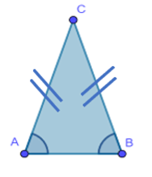
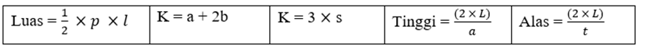
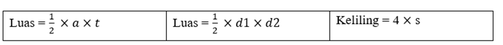
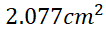

SEGITIGA, JAJAR GENJANG, BELAH KETUPAT

SINDI AULIA PUTRI
AAN HENDRAYANA, S.Si., M.Pd.
UNTIRTA PRESS
SEGITIGA, JAJAR GENJANG, BELAH KETUPAT
SINDI AULIA PUTRI
AAN HENDRAYANA, S.Si., M.Pd.
UNTIRTA PRESS
Alhamdulillah puji dan syukur kami panjatkan kehadirat Allah SWT yang telah memberikan rahmat dan karunia-Nya, sehingga penulis dapat menyelesaikan penyusunan buku dengan judul Bangun Datar (Segitiga, Jajar Genjang, dan Belah Ketupat), buku ini disusun untuk memenuhi tugas projek mata kuliah Pengembangan Multimedia Matematika dan dapat membantu siswa dalam mempelajari bangun datar khususnya tentang Segitiga, Jajar Genjang, dan Belah Ketupat.
Untuk itu penulis mengucapkan terima kasih kepada Aan Hendrayana, S. Si., M. Pd., selaku dosen pengampu mata kuliah Pengembangan Multimedia Matematika dan seluruh pihak yang telah membantu dalam menyelesaikan buku ini dengan baik, walaupun masih banyak kekurangan.
Penulis menyadari sepenuhnya bahwa penyusunan buku ini jauh dari sempurna dan banyak terdapat kekurangan baik mengenai isi maupun bahasanya Hal ini dikarenakan keterbatasan pengetahuan. Oleh sebab itu penulis sangat mengharapkan kritik dan saran untuk kesempurnaan makalah ini, serta Demi kemajuan penulisan yang akan datang. Dan semoga tugas ini dapat memberikan manfaat bagi semua pihak yang memerlukannya.
Serang, 16 Maret 2022
Sindi Aulia Putri
2.4 Cara Mempelajari Bangun Datar Pada Siswa Sekolah Dasar
2.5 Ukuran Sudut, Simetri Lipat, Simetri Putar, dan Pencerminan Bangun Datar
27 Cara Membuat Animasi Segitiga, Jajar Genjang, dan Belah Ketupat di Geogebra
Gambar 5 (Segitiga Siku - Siku)
Gambar 7 (Segitiga Siku - Siku)
Gambar 10 (Segitiga Sama Sisi)
Gambar 11 (Segitiga Sembarang)
Gambar 19(Segitiga Siku - Siku)
Gambar 25 (Simetri Lipat Bangun Datar)
Tabel 1 (Berdasarkan Sudut segitiga)
Tabel 5 (Ukuran Sudut Bangun Datar)
Tabel 6 (Simetri Putar, Lipat, Sumbu)
|
Alas |
: Bagian dasar dari suatu bangun atau benda |
|
Bangun datar |
: Bangun yang seluruh bagiannya terletak pada bidang (permukaan) datar. Bangun datar disebut juga bangun dua dimensi (2D). |
|
Belah ketupat |
: Segi empat yang keempat sisinya sama panjang dan sudut yang berhadapan sama besar. |
|
Diagonal |
: Garis yang ditarik dari titik sudut ke titik sudut yang tidak bersisian dalam suatu bangun datar. |
|
Jajargenjang |
: Segi empat yang memiliki dua pasang Sisi yang berhadapan sejajar dan sama panjang. |
|
Keliling |
: Jumlah panjang sisi-sisi suatu bangun tertutup. |
|
Luas |
: Banyaknya satuan luas yang meliputi suatu daerah (permukaan) bangun datar. Satuan luas adalah persegi. |
|
Matematika |
: Bidang pengetahuan yang telah di pelajari sejak dahulu dan akan di pelajari hingga masa depan dan dasar perkembangan ilmu pengetahuan dan teknologi modern. |
|
Pangkat |
: Bentuk singkat dari perkalian berulang dari faktor pengali yang sama. |
|
Perbandingan |
: Suatu pasangan bilangan yang dapat ditulis a : b dengan b |
|
Segitiga |
: Bangun datar yang memiliki tiga Sisi dan tiga sudut. |
|
Sisi |
: (1) Bidang pada bangun ruang sisi banyak, dan (2) Ruas garis yang membatasi suatu segi banyak. |
|
Sudut |
: Daerah yang dibatasi oleh dua buah sinar garis yang pangkalnya berimpit. |
|
Tabel |
: Daftar suatu keterangan. |
|
Volume |
:
Banyaknya satuan volume yang terdapat pada bangun ruang. Satuan volume adalah
kubik, misalnya 1 |
Matematika merupakan bidang pengetahuan yang telah dipelajari sejak dahulu dan akan dipelajari hingga masa depan. Matematika dijadikan mata pelajaran wajib di semua jenjang pendidikan. Hal ini disebabkan karena matematik dijadikan dasar perkembangan ilmu pengetahuan dan teknologi modern. Matematika diajarkan kepada siswa karena diyakini mampu meningkatkan kemampuan berpikir logis dan ketelitian pada pemecahan suatu masalah. Hal ini sesuai dengan Permendiknas Nomor 22 Tahun 2006 tentang Standar Isi menyebutkan bahwa matematika diberikan kepada siswa sekolah dasar untuk membekali kemampuan berpikir logis, analitis, sistematis, kritis kreatif dan kerjasama. Kemampuan dasar yang dimiliki siswa yakni kemampuan pemahaman dan penalaran pada pembelajaran matematika termasuk dalam tujuan pembelajaran.
Matematika merupakan ilmu yang perlu dipahami oleh setiap orang, terutama siswa yang berada pada jenjang pendidikan formal. Sedangkan hakikat dari matematika adalah siswa dihadapkan dalam belajar matematika pada masalah tertentu berdasarkan konstruksi pengetahuan yang diperolehnya ketika belajar dan akan berusaha memecahkannya (Hamzah, 2010). Salah satu kunci keberhasilan dalam belajar matematika adalah penguasaan konsep. Menurut Sagala (2009), konsep merupakan suatu ide abstrak yang mewakili objek- objek, kejadian-kejadian, kegiatan-kegiatan, atau hubungan-hubungan yang mempunyai atribut-atribut yang sama. Alasan pemahaman konsep matematika penting bagi siswa adalah dasar pengetahuan yang menjadi tujuan dari belajar matematika awal (Mulligan, Mitchelmore, 2009).
Menurut Sierpinska (2005) pemahaman merupakan suatu hal yang nyata sebagai pengalaman mental seseorang yang potensial atau aktivitas kognitif yang berlangsung pada waktu yang lebih panjang. Dengan adanya pemahaman memudahkan terjadinya transfer ilmu (Hiebert dalam Barmby et.al, 2009). Menurut Polya (1973) pemecahan masalah merupakan usaha mencari jalan keluar dari suatu kesulitan/permasalahan untuk mencapai suatu tujuan yang tidak dapat dicapai secara langsung. Ruhimat (2009) menyatakan bahwa jika suasana pembelajaran matematika dikaitkan dengan suatu peristiwa yang biasa dialami dapat membuat siswa lebih aktif, inovatif,kreatif, efektif dan menyenangkan, maka kegiatan belajar bagi siswa akan penuh makna.
Tujuan pembelajaran akan tercapai secara optimal. Salah satu materi pembelajaran matematika adalah bangun datar. Dalam pembelajaran materi bangun datar masih disebutkan bahwa guru mengajar dengan menggambarkan bangun datar di papan tulis, sedangkan siswa hanya melakukan handicap yang dibuat oleh guru, dan pada akhirnya siswa tidak mampu menerapkannya dalam kehidupan sehari-hari (Ilma, Ratu, 2011).Undang-undang Nomor 14 Tahun 2005 tentang Guru dan Dosen menjelaskan bahwa kompetensi guru dengan utama mendidik, mengajar, membimbing, mengarahkan, melatih, menilai, dan mengevaluasi peserta didik. Menurut turmudi (2008), pembelajaran matematika dikomunikasikan kepada siswa secara informatif, artinya siswa hanya menerima informasi mengenai pembelajaran matematika dari guru sehingga tingkat keterikatan dapat dikatakan rendah.
Bangun datar tersebut sangat erat berhubungan dengan pembelajaran matematika. Bangun datar mempunyai bentuk yang berbeda dari segi maupun sudut. Dalam makalah ini yang akan dibahas mengenai segitiga, jajar genjang, dan belah ketupat. Adapun hal yang berkaitan dengan bangun datar tersebut antara lain : sifat, rumus luas, rumus keliling, simetri lipat, sumbu simetri, simetri putar, pencerminan, dan kesebangunan bangun datar serta membelajarkan bangun datar bangun datar kepada siswa sekolah dasar menggunakan media. Oleh karena itu penting bagi kita untuk mempelajari berbagai macam bangun datar. Dalam pembelajaran, seorang pendidik memerlukan media atau alat peraga untuk mempermudah dalam menyampaikan materi pembelajaran. Dengan menggunakan media, pembelajaran akan lebih bermakna dan tujuan pembelajaran dapat tercapai.
Imam Roji (1997) menyatakan bahwa bangun datar adalah bagian dari bidang datar yang dibatasi dibatasi oleh garis - garis lurus atau lengkung. Julius Hambali, Siskandar, dan Mohamad Rohmad (1996) berpendapat bahwa bangun datar dapat didefinisikan sebagai bangun yang mempunyai dua dimensi yaitu, panjang dan lebar, tetapi tidak mempunyai tinggi atau tebal. Berdasarkan kedua pengertian di atas dapat disimpulkan bahwa bangun datar adalah bangun dua dimensi yang hanya memiliki panjang dan lebar, yang dibatasi oleh garis lurus atau lengkung.
Bangun datar merupakan sebuah bangun berupa bidang datar yang dibatasi oleh beberapa ruas garis. Jumlah dan model ruas garis yang membatasi bangun tersebut menentukan nama dan bentuk bangun datar tersebut. Misalnya: - Bidang yang dibatasi oleh 3 ruas garis, disebut bangun segitiga. - Bidang yang dibatasi oleh 4 ruas garis, disebut bangun segiempat. - Bidang yang dibatasi oleh 5 ruas garis, disebut bangun segilima dan seterusnya. Jumlah ruas garis serta model yang dimiliki oleh sebuah bangun merupakan salah satu sifat bangun datar tersebut. Jadi, sifat suatu bangun datar ditentukan oleh jumlah ruas garis, model garis, besar sudut, dan lain-lain.
Segitiga adalah salah satu bangun datar yang mempunyai tiga sisi dan tiga sudut. Sifat segitiga sebagai berikut.
Gambar 1 (Segitiga)
1. Mempunyai 3 sudut, yaitu sudut A, sudut B, dan sudut C.
2. Mempunyai 3 sisi, yaitu sisi AB, sisi BC, dan sisi CA.
3. Jumlah ketiga sudutnya adalah (sudut A + sudut B + sudut C = )
Jenis segitiga berdasarkan sisi, yaitu:
a. Segitiga sama sisi
Segitiga sama sisi adalah segitiga yang ketiga sisinya sama panjang, sehingga semua sudutnya juga sama besar yaitu 60.

Gambar 2 (Segitiga Sama Sisi)
Bangun segitiga sama sisi memiliki sifat-sifat sebagai berikut:
1. Memiliki 3 ruas garis: ruas garis: AB, AC, AB, AC, dan BC.
2. Ketiga (semua) ruas garis sama panjang. ruas garis sama panjang.
3. Memiliki dua macam ukuran macam ukuran alas dan tinggi. dan tinggi.
4. Memiliki tiga buah sudut sama besar ().
b. Segitiga Sama Kaki
Segitiga sama kaki adalah segitiga yang dua dari tiga sisinya sama panjang. Segitiga ini memiliki dua sudut yang sama besar yaitu sudut antara kaki dan alas s yang sama besar yaitu sudut antara kaki dan alas segitiga.

Gambar 3 (Segitiga Sama Kaki)
Bangun segitiga sama kaki memiliki sifat-sifat sebagai berikut:
1. Memiliki 3 ruas garis: AB, AC, dan BC
2. Dua ruas garis kaki sama panjang, AC dan BC.
3. Memiliki dua macam ukuran macam ukuran alas dan tinggi. dan tinggi.
4. Memiliki tiga buah sudut lancip.
5. Semua sudutnya sama besar.
c. Segitiga Sembarang
Segitiga sembarang adalah segitiga yang ketiga sisinya berbeda panjangnya. Besar semua sudutnya juga berbeda.

Gambar 4 (Segitiga Sembarang)
Bangun segitiga sembarang memiliki sifat-sifat sebagai berikut:
a) Sesuai dengan namanya, segitiga ini terdiri dari tiga buah sisi yang tidak sama panjangnya
b) Hanya terdapat satu buah simetri putar
c) Memiliki besaran yang berbeda pada masing-masing sudutnya
d) Tidak memiliki sumbu simetri
e) Ketiga sudutnya berjumlah
d. Segitiga Siku-Siku
Segitiga siku-siku adalah sebuah segitiga yang pada salah satu bagiannya memiliki sudut tepat sebesar (tegak lurus).
Gambar 5 (Segitiga Siku - Siku)
Segitigasiku-siku memiliki sifat sebagai berikut:
1. Memiliki 3 ruas garis: ruas garis: AB, AC dan BC
2. Memiliki garis tegak lurus pada alas (tinggi) lurus pada alas (tinggi)
3. Memiliki ukuran, alas, dan tinggi.
4. Memiliki dua buah sudut lancip
5. Memiliki satu buah sudut siku-siku ()
Berdasarkan Sudut nya:
Tabel 1 (Berdasarkan Sudut segitiga)
|
No |
Segitiga |
Sifat Sifat Segitiga |
Rumus |
|
1 |
Lancip
Gambar 6 (Segitiga Lancip) |
a) Mempunyai tiga sisi b) Mempunyai tiga sudut c) Segitiga yang sudut lancipnya kurang dari |
A = alas T = tinggi
|
|
2 |
Siku-siku
Gambar 7 (Segitiga Siku - Siku) |
a) Memiliki 3 ruas garis: ruas garis: AB, AC dan BC b) Memiliki garis tegak lurus pada alas (tinggi) lurus pada alas (tinggi) c) Memiliki satu buah sudut siku-siku () |
L = Luas P = Panjang L = lebar
|
|
3 |
Tumpul
Gambar 8 (Segitiga Tumpul) |
a) Mempunyai salah satu sudut yang lebih dari 180 b) Mempunyai 2 sudut yang sama besar. c) Mempunyai 2 sisi yang sama panjang. |
Keliling = a + b + c
Tinggi = Alas = |
|
4 |
Sama kaki
Gambar 9 (Segitiga Sama Kaki) |
a) Dua sisinya sama panjang (AB = BC). b) Dua sudutnya sama besar (A = C). c) Memiliki dua macam ukuran macam ukuran alas dan tinggi. dan tinggi. |
K = keliling a = panjang alas b = panjang kaki K = a + b + c K = a + 2b |
|
5 |
Sama sisi
Gambar 10 (Segitiga Sama Sisi) |
a) Ketiga sisinya sama panjang (AB = AC = CB). b) Ketiga sudutnya sama besar ( = = ). |
K = keliling S = sisi K = s + s + s K = 3 s |
|
6 |
Sembarang
Gambar 11 (Segitiga Sembarang) |
a) Ketiga sisinya tidak sama panjang b) Ketiga sudutnya tidak sama besar ( ) |
- |
Segitiga adalah salah satu bangun datar yang mempunyai tiga sisi dan tiga sudut. Segitiga terdiri dari: segitiga lancip, segitiga siku-siku, segitiga sama kaki, segitiga sama sisi, segitiga tumpul, dan segitiga sembarang.
Rumus
Tabel 2 (Rumus Segitiga)

1. Diketahui segitiga sama kaki mempunyai sisi alas 4 cm dan panjang sisi kaki 60 cm. Berapakah keliling segitiga sama kaki?
2. Luas sebuah segitiga adalah dan panjang alasnya 24 cm. Berapakah tinggi segitiga tersebut?
3. Luas Sebuah Segitiga dan tingginya 40 cm. Berapakah alas segitiga tersebut?
4. Sebuah segitiga sama sisi dengan ketiga sisinya 45 cm, Berapakah keliling segitiga sama sisi?
5. Panjang alas suatu segitiga adalah 22 cm dan tingginya 6 cm. Luas segitiga itu adalah?
6. Sebuah meja berbentuk segitiga sama sisi dengan panjang sisinya 1,5 meter. Di sekeliling meja dihiasi mawar flanel yang berjarak 6 cm antara satu dan yang lainnya. Banyaknya mawar flanel pada meja tersebut ada?
7. Kebun Pak Saki berbentuk segitiga dengan panjang tiap sisi adalah 4 m, 8 m, dan 12 m. Di sekeliling kebun tersebut akan dipasang pagar dengan biaya Rp 65.000,00 per meter. Berapakah biaya yang diperlukan untuk pemasangan pagar kebun Pak saki?
8. Diketahui segitiga ABC siku-siku di B. Jika luas segitiga ABC dan panjang AB = 12 cm, maka panjang BC adalah? cm.
9. Sebuah segitiga sama kaki dengan panjang sisi yang sama 65 cm dan tingginya 15 cm. Hitunglah luasnya!
10. Sebuah wadah udang berbentuk segitiga sama sisi dengan panjang sisinya 16 meter. Tambak tersebut akan dikelilingi pagar kawat 4 tingkat. Berapa meter kawat yang dibutuhkan?
1.
Luas sebuah segitiga adalah  dan panjang alasnya 18 cm. Berapakah tinggi segitiga tersebut?
dan panjang alasnya 18 cm. Berapakah tinggi segitiga tersebut?
Penyelesaian
Diketahui: L =  , Alas = 18 cm
, Alas = 18 cm
Ditanya: Berapakah tinggi segitiga?
Jawab:
Tinggi =
Jadi Tinggi Segitiga adalah 15 cm
2. Panjang alas suatu segitiga adalah 12 cm dan tingginya 5 cm. Luas segitiga itu adalah?
Penyelesaian
Diketahui: alas = 12 cm, tinggi = 5 cm
Ditanya: luas segitiga?
Dijawab:
Jadi luas segitiga = 
3.
Luas sebuah Segitiga dan tingginya 6 cm. Berapakah alas segitiga tersebut?
dan tingginya 6 cm. Berapakah alas segitiga tersebut?
Penyelesaian
Diketahui: Luas = t = 6 cm
Ditanya: alas segitiga?
Di Jawab:

Jadi alas segitiga = 30 cm
4. Sebuah segitiga sama sisi dengan ketiga sisinya 4 cm, Berapakah keliling segitiga sama sisi?
Penyelesaian
Diketahui: sisi = 4 cm
Ditanya: keliling segitiga?
Jawab:
Jadi keliling segitiga = 12 cm
5. Diketahui segitiga sama kaki mempunyai sisi alas 3 cm dan panjang sisi kaki 6 cm. Berapakah keliling segitiga sama kaki?
Penyelesaian
Diketahui: alas = 3 cm, b (panjang kaki) = 6 cm
Ditanya: keliling segitiga sama kaki?
Di jawab:
K = a + 2b = 3 + (2  6) = 3 + 12 = 15 cm
6) = 3 + 12 = 15 cm
Jadi keliling Segitiga sama kaki = 15 cm
6.
Diketahui segitiga ABC siku-siku di B. Jika luas
segitiga ABC  dan panjang AB = 14 cm,
maka panjang BC adalah .... cm
dan panjang AB = 14 cm,
maka panjang BC adalah .... cm
Penyelesaian
Diketahui luas =  , AB = 14 cm adalah tinggi segitiga
, AB = 14 cm adalah tinggi segitiga
Ditanyakan panjang BC (alas)?
L = 
105 = 
a = 105 x 2 : 14
a = 15 cm
Jadi alas Segitiga = 15 cm
7. Sebuah tambak udang berbentuk segitiga sama sisi dengan panjang sisinya 12 meter. Tambak tersebut akan dikelilingi pagar kawat 3 tingkat. Berapa meter kawat yang dibutuhkan?
Penyelesaian
Diketahui panjang sisi = 12 m
Pagar kawat = 3 tingkat
Ditanyakan panjang kawat yang
diperlukan?
Untuk mengetahui panjang kawat yang
diperlukan, kita harus menghitung keliling segitiga
K = 3 x sisi
K = 3 x 12 m
K = 36 meter
Kawat yang diperlukan = K x 3
Kawat yang diperlukan = 36 m x 3 =
108 meter
Jadi, kawat yang dibutuhkan
adalah 108 meter
8. Kebun Pak Warso berbentuk segitiga dengan panjang tiap sisi adalah 6 m, 8 m, dan 10 m. Di sekeliling kebun tersebut akan dipasang pagar dengan biaya Rp 75.000,00 per meter. Berapakah biaya yang diperlukan untuk pemasangan pagar kebun Pak Warso?
Penyelesaian
Diketahui panjang tiap sisi = 6 m, 8 m, dan 10 m
Biaya = Rp 75.000,00/meter
Ditanyakan total biaya yang
diperlukan?
Untuk menghitung biaya yang
diperlukan, maka kita harus menghitung keliling segitiga.
K = sisi a + sisi b + sisi c
K = 6 m + 8 m + 10 m
K = 24 meter
Biaya yang diperlukan = K  biaya per meter
biaya per meter
Biaya yang diperlukan = 24 meter x Rp 75.000,00/meter
Biaya yang diperlukan = Rp
1.800.000,00
Jadi biaya yang diperlukan untuk pemasangan pagar = Rp 1.800.000,00
9. Sebuah segitiga sama kaki dengan panjang sisi yang sama 50 cm dan tingginya 14 cm. Hitunglah luasnya!
Penyelesaian
Diketahui panjang sisi (sisi miring) = 50 cm,
tinggi = 14 cm
Ditanyakan luas?
Untuk menghitung luas segitiga, kita
harus mencari panjang alasnya dengan cara menggunakan Rumus Pythagoras


b = √2.304
b = 48 cm
Panjang alas = 48 cm
Panjang alas segitiga sama kaki = 2
x 48 = 96 cm
Jika digambar akan seperti di bawah ini
Gambar 12 (Segitiga)
L = 1/2 x a x t
L = 1/2 x 96 x 14
L =
Jadi, luas segitiga sama kaki
adalah 
10. Sebuah taplak meja berbentuk segitiga sama sisi dengan panjang sisinya 1,5 meter. Di sekeliling taplak meja dihiasi mawar flanel yang berjarak 5 cm antara satu dan yang lainnya. Banyaknya mawar flanel pada taplak meja tersebut ada.
Penyelesaian
Diketahui panjang sisi segitiga = 1,5 m
Jarak mawar flanel = 5 cm
Ditanyakan jumlah mawar flanel?
Untuk menghitung jumlah mawar
flanel, kita harus menghitung keliling taplak meja
K = 3 x panjang sisi
K = 3 x 1,5 m
Keliling taplak meja = 4,5 m = 450
cm
Banyak mawar flanel = keliling kebun
: jarak mawar flanel
Banyak mawar flanel = 450 : 5
Banyak mawar flanel = 90
Jadi banyaknya mawar flanel pada
taplak meja = 90
Jajargenjang adalah segiempat dengan sisi-sisi yang berhadapan sejajar dan sama panjang serta sudut-sudut yang berhadapan sama. jajargenjang dapat dibentuk dari gabungan sebuah segitiga dan bayanganya setengah putaran dengan pusat titik tengah salah satu sisinya.

Gambar 13 (Jajar Genjang)
Sifat-sifat jajargenjang adalah sebagai berikut:
a) Dua pasang sisinya sama panjang dan sejajar (DC = AB, AD = BC).
b) Mempunyai dua sudut lancip ( A dan C) dan dua sudut tumpul ( B dan D)
c) Memiliki 4 sisi dan 4 titik sudut.
d) Memiliki 2 pasang sisi yang sejajar dan sama panjang
e) Memiliki 2 sudut tumpul dan 2 sudut lancip
f) Sudut yang berhadapan sama besar
g) Diagonalnya tidak sama panjang
h) Tidak memiliki simetri lipat
i) Memiliki simetri putar tingkat 2
Rumus Jajar Genjang
L = luas, a = alas, t = tinggi
Tabel 3 (Rumus Jajar Genjang)
Jajargenjang adalah segiempat dengan sisi-sisi yang berhadapan sejajar dan sama panjang serta sudut-sudut yang berhadapan sama. Dengan rumus:
,
Memiliki beberapa sifat yaitu: Sisi-sisi yang berhadapan sama panjang dan sejajar; Sudut-sudut yang berhadapan sama besar; Jumlah pasangan sudut yang saling berdekatan adalah ; Diagonal-diagonalnya saling membagi sama panjang.
1) Diketahui jajar genjang ABCD dengan AB = 28 cm dan AB : BC = 6 : 2 dengan jika tinggi = 7 cm, hitunglah kelilingnya?
2) Pada sebuah jajargenjang diketahui luasnya 255 cm2. Jika panjang alas jajargenjang tersebut 5x dan tingginya 2x, tentukan nilai x, panjang alas dan tinggi jajargenjang tersebut?
3) Diketahui jajar genjang ABCD dengan AB = 45 cm dan tinggi = 5 cm, hitunglah luasnya?
4) Luas jajar genjang ABCD adalah 361 cm2 dan tingginya 19 cm. Tentukan panjang alasnya.
5) Tiwi sedang membuat prakarya dari kertas berbentuk jajargenjang dengan panjang sisi 65 cm dan sisi yang satunya 25 cm. Pada kertas tersebut akan ditempelkan manik-manik dengan jarak 5 cm. Banyaknya manik-manik yang dibutuhkan Tiwi adalah .... buah
6) Sebuah kayu berbentuk jajargenjang dengan panjang sisi 45 meter dan 75 meter. Kayu tersebut akan dikelilingi batako. Tiap meter membutuhkan 10 batako. Berapa batako yang dibutuhkan untuk mengelilingi kayu tersebut?
7) Keliling jajargenjang adalah 55 cm. Jika panjang dua sisinya 75 cm, maka panjang sisi yang satunya adalah .... cm
8) Kebun nenek berbentuk jajargenjang dengan panjang sisi 26 dan 35 meter akan dibuatkan pagar dari bambu. Tiap meter membutuhkan 3 bambu. Berapa banyak bambu yang dibutuhkan untuk membuat pagar kebun nenek?
9) Kebun kakek berbentuk jajargenjang dengan panjang sisi 85 m. dan panjang sisi yang satunya 35 m. Kebun tersebut akan dibuatkan pagar dengan biaya Rp 100.000,00/meter. Biaya yang dibutuhkan adalah ....
10) Alpi mengelilingi lapangan yang berbentuk jajargenjang dengan panjang alas 100 meter dan panjang sisi 20 meter. Jika Alpi berlari sebanyak 3 kali putaran, maka jarak yang ditempuh Alpi adalah .... meter.
1. Pada sebuah jajargenjang diketahui luasnya 484 cm2. Jika panjang alas jajargenjang tersebut 4x dan tingginya x, tentukan nilai x, panjang alas dan tinggi jajargenjang tersebut?
Penyelesaian:
Untuk mencari nilai x kita gunakan rumus luas jajar genjang, yakni:
484 cm2 = (4x) x (x)
484 cm2 = 4x2
x2 =  cm
cm
x = 
Setelah ketemu nilai x maka panjang alas jajar genjang dapat dicari yaitu:
Panjang alas = 4x
Panjang alas = 4 x 11 cm
Panjang alas = 44 cm
Dengan cara yang sama (memasukan nilai x) kita akan dapatkan panjang tinggi jajargenjang yaitu:
Panjang tinggi = x
Panjang tinggi = 1 x 11 cm
Panjang tinggi = 11cm
Jadi panjang alas = 44 cm dan tinggi = 11 cm
2. Luas jajar genjang ABCD adalah dan tingginya 3 cm. Tentukan panjang alasnya.
Penyelesaian:

alas = 
alas = 23 cm
Jadi panjang alas = 23 cm
3. Diketahui jajar genjang ABCD dengan AB = 36 cm dan AB : BC = 4 : 3 dengan jika tinggi = 5 cm, hitunglah kelilingnya?
Gambar 14 (Jajar Genjang)
Penyelesaian
Untuk mancari keliling ABCD terlebih dahulu harus mencari panjang BC dengan menggunakan konsep perbandingan, yaitu:
AB : BC = 4 : 3
12 cm : BC = 4 : 3
BC =
BC = 3 (9)
BC = 27 cm
Dengan menggunakan panjang BC kita bisa mencari keliling jajar genjang yaitu:
keliling = 2 (AB+BC)
keliling = 2 (36 cm + 27 cm)
keliling = 2 (63 cm)
keliling = 126 cm
Jadi keliling jajar genjang = 126 cm
4. Diketahui jajar genjang ABCD dengan AB = 12 cm dan tinggi = 6 cm, hitunglah luasnya?
Penyelesaian
Jawab:
Jadi luas jajargenjang =
5. Keliling jajargenjang adalah 50 cm. Jika panjang dua sisinya 30 cm, maka panjang sisi yang satunya adalah .... cm
Penyelesaian
Diketahui keliling = 50 cm, panjang dua sisinya=
30 cm
Ditanyakan panjang sisi satunya?
K = 2 x (a + b)
50 cm = 2a + 2b
50 cm = 30 cm + 2b
2b = 
2b = 20 cm
b = 20 : 2 = 10 cm
Jadi, panjang sisi yang satunya
adalah 10 cm
6. Ali mengelilingi lapangan yang berbentuk jajargenjang dengan panjang alas 120 meter dan panjang sisi 80 meter. Jika Ali berlari sebanyak 3 kali putaran, maka jarak yang ditempuh Ali adalah .... meter.
Penyelesaian
Diketahui panjang alas = 120 m, panjang sisi
satunya = 80 m, banyaknya putaran = 3
Ditanyakan jarak tempuh?
Untuk mengetahui jarak tempuh, kita
harus menghitung keliling lapangan.
K = 2 x (a + b)
K = 2 x (120 m + 80 m)
K = 400 m
Jarak tempuh = K x banyaknya putaran
Jarak tempuh = 400 x 3 = 1.200 meter
Jadi jarak yang ditempuh ali = 1.200 meter
7. Talita sedang membuat prakarya dari kertas karton berbentuk jajargenjang dengan panjang sisi 75 cm dan sisi yang satunya 55 cm. Pada kertas karton tersebut akan ditempelkan manik-manik dengan jarak 5 cm. Banyaknya manik-manik yang dibutuhkan Talita adalah .... buah
Penyelesaian
Diketahui panjang sisi = 75 cm, panjang sisi
satunya = 55 cm, jarak manik-manik = 5 cm
Ditanyakan manik-manik yang
dibutuhkan?
Untuk mengetahui manik-manik yang
dibutuhkan kita harus menghitung keliling jajargenjang.
K = 2 x (a + b)
K = 2 x (75 cm + 55 cm)
K = 260 cm
Manik-manik yang dibutuhkan = K :
jarak manik-manik
Manik-manik yang dibutuhkan = 260 :
5 = 52
Jadi, manik-manik yang dibutuhkan
Talita sebanyak 52 buah
8. Kebun kakek berbentuk jajargenjang dengan panjang sisi 36 dan 28 meter akan dibuatkan pagar dari bambu. Tiap meter membutuhkan 3 bambu. Berapa banyak bambu yang dibutuhkan untuk membuat pagar kebun kakek?
Penyelesaian
Diketahui panjang sisi = 36 m dan 28 m, bambu
yang dibutuhkan tiap meter = 3
Ditanyakan bambu yang dibutuhkan?
Untuk mengetahui jumlah bambu yang
dibutuhkan, kita harus menghitung keliling kebun.
K = 2 x (a + b)
K = 2 x (36 m + 28 m)
K = 2 x 64 m
K = 128 m
Jumlah bambu yang dibutuhkan = K  banyak
bambu per meter
banyak
bambu per meter
Jumlah bambu yang dibutuhkan = 128 x 3 = 384
Jadi, bambu yang dibutuhkan untuk membuat pagar jumlahnya ada 384
9. Sebuah tambak berbentuk jajargenjang dengan panjang sisi 75 meter dan 55 meter. Tambak tersebut akan dikelilingi batako. Tiap meter membutuhkan 15 batako. Berapa batako yang dibutuhkan untuk mengelilingi tambak tersebut?
Penyelesaian
Diketahui panjang sisi = 75 m dan 55 m, batako
yang dibutuhkan tiap meter = 15
Ditanyakan batako yang dibutuhkan?
Untuk mengetahui jumlah batako yang
dibutuhkan, kita harus menghitung keliling tambak.
K = 2 x (a + b)
K = 2 x (75 m + 55 m)
K = 260 m
Jumlah batako yang dibutuhkan = 
Jumlah bambu yang dibutuhkan = 260 x
15 = 3.900
Jadi, batako yang dibutuhkan
untuk mengelilingi tambak jumlahnya ada 3.900
10. Kebun kakek berbentuk jajargenjang dengan panjang sisi 75 m. dan panjang sisi yang satunya 65 m. Kebun tersebut akan dibuatkan pagar dengan biaya Rp 80.000,00/meter. Biaya yang dibutuhkan adalah ....
Penyelesaian
Diketahui panjang sisi = 75 m, panjang sisi
satunya = 65 m, biaya pagar = Rp 80.000,00/meter
Ditanyakan biaya yang dibutuhkan?
Untuk mengetahui biaya yang
dibutuhkan kita harus menghitung keliling kebun.
K = 2 x (a + b)
K = 2 x (75 m + 65 m)
K = 280 m
Biaya yang dibutuhkan = K  biaya pagar/meter
biaya pagar/meter
Biaya yang dibutuhkan = 280 m x Rp
80.000,00/m
Biaya yang dibutuhkan = Rp
22.400.000,00
Jadi Biaya yang dibutuhkan = Rp 22.400.000,00
Belah ketupat adalah segiempat dengan sisi yang berhadapan sejajar, keempat sisinya sama panjang dan sudut-sudut yang berhadapan sama besar. Belah ketupat dibentuk dari gabungan segitiga sama kaki dan bayangan setelah dicerminkan terhadap alasnya.

Gambar 15 (Belah Ketupat)
Sifat-sifat belah ketupat:
a) Semua sisinya sama panjang
b) Diagonal-diagonalnya merupakan sumbu simetri.
c) Sudut-sudut yang berhadapan sama besar dan dibagi dua sama besar.
d) Kedua diagonalnya saling membagi dua sama panjang dan saling tegak lurus.
Rumus Belah Ketupat:
Diagonal pertama = a atau d1; Diagonal kedua = b atau d2; sisi = s
Tabel 4 (Rumus Belah Ketupat)

Belah ketupat yaitu mempunyai sisi yang sama panjang, sudut yang sama besar, dan mempunyai dua diagonal yang membagi.
Rumus:
,
Gambar 16 (Belah Ketupat)
1) Suatu belah ketupat, panjang sisinya adalah 6a cm. Jika kelilingnya adalah 56 cm, tentukanlah nilai a?
2) Suatu belah ketupat memiliki sisi berukuran 115 cm. Berapakah keliling bangun belah ketupat tersebut?
3)
Belah
ketupat ABCD dengan luas .
Jika panjang diagonal-diagonalnya adalah 2x dan 5x, maka tentukan nilai x dan
panjang kedua diagonalnya?
.
Jika panjang diagonal-diagonalnya adalah 2x dan 5x, maka tentukan nilai x dan
panjang kedua diagonalnya?
4) Sebidang tanah berbentuk belah ketupat dengan panjang diagonal-diagonalnya adalah 69 cm dan 9 cm. Tentukan luas tanah tersebut?
5) Gambar sABCD di atas ini adalah belah ketupat, dengan AB = 25 cm, AE = 12 cm, dan DE = 9 cm. Tentukanlah keliling dan luasnya?
6) Sebuah taman berbentuk belah ketupat dengan ukuran panjang sisinya 37 m. Di sekeliling taman akan dipasang lampu yang berjarak 26 m antara satu dan yang lainnya. Berapa jumlah lampu yang mengelilingi taman tersebut?
7) Panjang diagonal-diagonal suatu belah ketupat
diketahui berturut-turut 50 cm dan (4x + 6) cm. Luas belah ketupat tersebut  . Berapakah nilai x?
. Berapakah nilai x?
8) Luas belah ketupat 236 cm persegi dan perbandingan panjang diagonal diagonalnya adalah 6 : 3. Tentukan panjang diagonal terpendek.?
9) Sebuah lantai berbentuk belah ketupat dengan panjang diagonal 1 = 96 cm dan panjang diagonal 2 = 26 cm. Panjang setiap sisinya adalah 20 cm. Tentukan luas dan keliling belah ketupat tersebut!
10) Sebuah lapangan berbentuk belah ketupat dengan panjang sisinya 115 meter. saski berlari mengelilingi lapangan tersebut sebanyak 5 putaran. Berapa jarak yang ditempuh Saski?
1) Suatu belah ketupat memiliki sisi berukuran 65 cm. Berapakah keliling bangun belah ketupat tersebut?
Penyelesaian:
K = 4 x s
K = 4 x 65 cm
K = 260 cm
Jadi keliling belah ketupat = 265 cm
2) Sebidang tanah berbentuk belah ketupat dengan panjang diagonal-diagonalnya adalah 25 cm dan 10 cm. Tentukan luas tanah tersebut.
Penyelesaian:
L = 
L =
L =  cm2
cm2
L = 125 cm2
Jadi luas tanah adalah 125 cm2
3) Suatu belah ketupat, panjang sisinya adalah 5a cm. Jika kelilingnya adalah 260 cm, tentukanlah nilai a?
Penyelesaian:
keliling = 4 x sisi
260 cm = 4 x 5a cm
260 cm = 20 a cm
a = 
a = 13 cm
Jadi, nilai a pada belah ketupat itu adalah 13 cm
4) Gambar ABCD di atas ini adalah belah ketupat, dengan AB = 15 cm, AE = 6 cm, dan DE = 8 cm. Tentukanlah keliling dan luasnya?
Gambar 17 (Belah Ketupat)
Penyelesaian:
Jadi, keliling belah ketupat ABCD tersebut adalah 40 cm
d1 = 2 x AE = 2 x 6 cm = 12 cm
d2 = 2 x DE = 2 x 8 cm = 16 cm
maka,


Jadi, luas belah ketupat itu adalah 192 cm2
5) ketupat ABCD dengan luas . Jika panjang diagonal-diagonalnya adalah 8x dan 3x, maka tentukan nilai x dan panjang kedua diagonalnya?
Penyelesaian:
72 cm2
= 
72 cm2 =
72 cm2
= 12 
x = √6 cm
panjang kedua diagonal tersebut adalah
d1 = 8x = 8√6 cm
d2 = 3x = 3√6 cm
Jadi d1 = 8√6 cm dan d2 = 3√6 cm
6) Luas belah ketupat 162 cm persegi dan perbandingan panjang diagonal diagonalnya adalah 9:4. Tentukan panjang diagonal terpendek.?
Penyelesaian:
Jika terdapat perbandingan, kita pakai permisalan: d1 = 9a, d2 = 4a
L
= 
162
= 
162 =

324
= 


Lalu kita masukkan nilai a tersebut ke persamaan sebelumnya :
d1 = 9a
d1 = 9.3 = 27
d2 = 4a
d2 = 4 . 3 = 12
Jadi diagonal terpendeknya adalah 12 cm
7) Sebuah lapangan berbentuk belah ketupat dengan panjang sisinya 125 meter. Andi berlari mengelilingi lapangan tersebut sebanyak 3 putaran. Berapa jarak yang ditempuh Andi?
Penyelesaian:
Diketahui panjang sisi = 225 meter, banyaknya
putaran = 3
Ditanyakan jarak?
Untuk menghitung jarak, kita harus
mengetahui keliling belah ketupat.
K = 4 x s
K = 4 x 125 meter
K = 500 meter
Jarak yang ditempuh = K x banyaknya
putaran
Jarak yang ditempuh = 500 x 3 =
1.500 meter
Jadi, jarak yang ditempuh Andi
sepanjang 1.500 meter
8) Panjang diagonal-diagonal suatu belah ketupat
diketahui berturut-turut 62 cm dan (6x + 7) cm. Luas belah ketupat tersebut  . Berapakah nilai x?
. Berapakah nilai x?
Penyelesaian:
Diketahui d1 dan d2 = 62 cm dan (6x + 7) cm, luas
=
Ditanyakan nilai x?
L = 
2.077 =
2.077= 31 x (6x + 7)
2.077 = 186 x + 217
186x = 2.077 - 217
186x = 1.860
x = 1.860 : 186
x = 10
Jadi nilai x = 10
9) Selembar kertas berbentuk belah ketupat dengan panjang diagonal 1 = 48 cm dan panjang diagonal 2 = 36 cm. Panjang setiap sisinya adalah 30 cm. Tentukan luas dan keliling belah ketupat tersebut!
Penyelesaian:
Diketahui d1 = 48 cm, d2 = 36 cm, panjang sisi =
30 cm
Ditanyakan luas dan keliling?
L = 
L
=
L = 
K = 4 x s
K = 4 x 30
K = 120 cm
Jadi, luas dan keliling belah
ketupat tersebut adalah  dan 120 cm
dan 120 cm
10) Sebuah taman berbentuk belah ketupat dengan ukuran panjang sisinya 87 m. Di sekeliling taman akan dipasang lampu yang berjarak 12 m antara satu dan yang lainnya. Berapa jumlah lampu yang mengelilingi taman tersebut?
Penyelesaian:
Diketahui panjang sisi = 87 meter, jarak lampu
= 12 meter
Ditanyakan jumlah lampu?
Untuk menghitung jumlah lampu, kita
harus mengetahui keliling belah ketupat.
K = 4 x s
K = 4 x 87 meter
K = 348 meter
Banyaknya lampu = K : jarak lampu
Banyaknya lampu = 348 : 12
Banyaknya lampu = 29
Jadi, banyaknya lampu yang
mengelilingi taman ada 29.
Kebanyakan orang menganggap bahwa matematika adalah pelajaran yang sulit. Karena itu, tidak mengherankan apabila sering kali nilai matematika adalah nilai terendah yang dijumpai oleh orang tua dalam raport anaknya. Tetapi, sesungguhnya menguasai pelajaran matematika bukanlah hal yang teramat sulit. Kesulitan dalam belajar matematika bukan disebabkan oleh sulitnya materi pelajaran, melainkan karena cara pengajaran yang tidak mudah dimengerti atau tidak sesuai dengan karakter cara belajar si anak. Dengan menggunakan teknik belajar yang tepat, maka pelajaran matematika akan menjadi menjadi lebih mudah dan menyenangkan untuk dipelajari.
Supaya pembelajaran matematika tertuju pada sasaran yang diinginkan maka ketika seorang guru membuat perencanaan untuk pelajaran matematika, perlu mewujudkannya dengan kreatif, membentuk pelajaran matematika interaktif matematika interaktif yang melibatkan para siswa dalam proses pembelajaran. Jika memungkinkan, rencanakan aktivitas yang akan menjadikan siswa-siswa berdiri dan bergerak di dalam atau di sekitar kelas. Tentunya hal ini dapat merangsang keaktifan siswa di kelas sehingga belajar matematika itu menjadi menyenangkan. Ada beberapa tips untuk perencanaan (pembelajaran) matematika, diantaranya rencanakan permainan-permainan matematika jika memungkinkan dan rencanakan kerja kelompok yang memberikan kesempatan bagi siswa-siswa yang mampu untuk maju membantu siswa-siswa yang lambat belajarnya
Dalam penyampaian materi pelajaran seorang pendidik dapat menggunakan media yang bertujuan agar siswa dengan mudah memahami suatu materi pelajaran. Berikut media yang dapat digunakan dalam membelajarkan bangun datar pada siswa:
1. Lagu
Seorang pendidik dapat menciptakan lagu atau mengubah lirik dari sebuah lagu yang sudah ada dengan mengaitkan materi pelajaran yang akan diajarkan. Dengan menggunakan lagu diharapkan suasana pembelajaran menjadi menyenangkan.
2. Roda Bangun Datar
Roda bangun datar yaitu sebuah roda yang berisi dengan sifat-sifat dari bangun datar tersebut guna membantu membantu siswa dalam memahami dan juga membantu pengajar dalam proses belajar mengajar. Media tersebut tidak hanya digunakan untuk pengenalan sifat-sifat bangun datar saja, akan tetapi dapat dimodifikasi lagi untuk penyampaian materi pelajaran matematika lainnya, sesuai kreativitas seorang pendidik.
3. Kertas Lipat
Dengan menggunakan media kertas lipat seorang pendidik dapat menyampaikan materi pelajaran tentang simetri lipat, sumbu simetri, dan simetri putar bangun datar. Kertas lipat tersebut tersebut sebelumnya digunting membentuk membentuk bangun datar. Setelah Setelah itu pendidik dapat mempraktikkan bagaimana bagaimana cara menggunakan media tersebut
4. Buku Strimin
Buku ini dapat digunakan pendidik dalam materi pelajaran pencerminan dan kesebangunan bangun datar
A. Ukuran Sudut Pada Bangun Datar
Setiap sudut dalam bangun datar diberi nama dengan satu huruf. Sebuah bangun datar diberi nama sesuai dengan nama titik sudutnya. sudutnya. Misalnya Misalnya bangun segitiga memiliki titik sudut A, B, dan C maka segitiga tersebut diberi nama segi tiga ABC. Begitu juga dengan bangun segiempat, apabila memiliki titik sudut A, B, C, dan D dinamakan segi empat ABCD atau jajargenjang dan belah ketupat ABCD.
Tabel 5 (Ukuran Sudut Bangun Datar)
|
SEGITIGA LANCIP
Gambar 18 (Segitiga Lancip) |
SEGITIGA SIKU-SIKU
Gambar 19(Segitiga Siku - Siku) |
|
SEGITIGA TUMPUL
Gambar 20 (Segitiga Tumpul)
|
JAJARGENJANG
Gambar 21 (Jajar Genjang)
|
|
JAJARGENJANG
Gambar 22 (Jajar Genjang) AB = DC, AD = BC
|
BELAH KETUPAT
Gambar 23 (Belah Ketupat)
|
|
BELAH KETUPAT
Gambar 24 (Belah Ketupat) |
AB = BC = CD = DA
|
B. Simetri Lipat Bangun Datar
Secara singkat simetri lipat pada bangun datar bisa didefinisikan sebagai banyaknya lipatan pada bangun datar yang bisa membagi bangun datar tersebut sehingga setengah bagian dari bangun datar tersebut bisa menutupi setengah bagian yang lain. Garis yang dapat membagi sebuah bangun datar menjadi dua dan kongruen disebut sebagai sumbu simetri. Perlu kita ketahui bahwasannya tidak setiap bangun datar memiliki garis yang dinamakan sebagai sumbu simetri.

Gambar 25 (Simetri Lipat Bangun Datar)
Pada gambar di atas garis atau sumbu simetri digambarkan dengan garis putus-putus. Apabila kita melipat atau memotong sebuah bangun datar dengan mengikuti garis-garis simetri tersebut maka bangun datar itu akan terbagi menjadi dua bagian yang sama besar.
C. Simetri Putar Bangun Datar
Sebuah bangun datar dapat dikatakan memiliki simetri putar apabila ia memiliki sebuah titik pusat dan apabila bangun datar tersebut dapat kita putar kurang dari satu putaran penuh untuk mendapatkan mendapatkan bayangan bayangan yang tepat seperti bangun semula. Sebagai contoh coba kita perhatikan gambar disamping.
Apabila memutar sebuah bangun datar dan hanya bisa mendapatkan bayangan seperti bangun semula dalam 1 putaran penuh, artinya bangun datar tersebut tidak memiliki simetri putar sama sekali. Contohnya adalah trapesium, bangun datar ini tidak memiliki simetri putar karena kita harus putar karena kita harus memutar sebanyak 1 putaran penuh untuk memperoleh bentuk bayangan trapesium seperti bentuk bangun semula. Tidak semua bangun datar memiliki simetri putar dan simetri lipat. Beberapa bangun datar ada yang hanya memiliki simetri putar, sementara yang lain ada yang hanya memiliki simetri lipat. Kalian bisa melihat daftar simetri lipat dan simetri putar yang dimiliki oleh tiap-tiap dan simetri putar yang dimiliki oleh tiap-tiap bangun datar pada tabel berikut ini :
Tabel 6 (Simetri Putar, Lipat, Sumbu)
|
No |
Nama Bangun Datar |
Simetri Lipat |
Simetri Putar |
Sumbu Simetri |
|
1 |
Persegi |
4 |
4 |
4 |
|
2 |
Persegi Panjang |
2 |
2 |
2 |
|
3 |
Belah Ketupat |
2 |
2 |
2 |
|
4 |
Jajar Genjang |
- |
2 |
- |
|
5 |
Segitiga Sama Kaki |
1 |
- |
1 |
|
6 |
Segitiga Sama Sisi |
3 |
3 |
3 |
|
7 |
Segitiga Sembarang |
- |
- |
- |
|
8 |
Segitiga Siku-Siku |
1 |
- |
1 |
|
9 |
Trapesium Sama Kaki |
1 |
- |
1 |
|
10 |
Trapesium Sama Siku - Siku |
- |
- |
- |
|
11 |
Trapesium Sembarang |
- |
- |
- |
|
12 |
Layang-Layang |
1 |
- |
1 |
|
13 |
Lingkaran |
Tak Hingga |
Tak Hingga |
Tak Hingga |
D. Pencerminan Bangun Datar
Pencerminan atau biasa disebut refleksi pada bangun datar merupakan sebuah transformasi atau perpindahan suatu titik pada bangun datar dengan menggunakan sifat benda dan bayangannya pada sebuah cermin datar. Oleh karenanya, kita harus paham terlebih dahulu mengenai sifat-sifat pencerminan pada bangun datar yang pada bangun datar yang akan dijelaskan sebagai berikut:
1) Objek dan bayangan akan selalu sama
2) Jarak setiap titik yang ada pada objek terhadap cermin, sama persis dengan jarak setiap titik yang ada pada bayangan terhadap cermin (s=s').
3) Tinggi bayangan akan sama dengan tinggi ba Tinggi bayangan akan sama dengan tinggi bayangannya yangannya (h=h')
Garis yang menghubungkan tiap titik pada objek dengan titik yang ada pada bayangan akan selalu tegak lurus terhadap cermin.
Tabel 7 (Rumus Bangun Datar)

Dasar,
S. (2021). Pengembangan modul bagun datar berbasis paikem untuk meningkatan
pemahaman matematis siswa sekolah dasar. Jurnal Ilmiah PGSD, 5(84),

Fatchurohman, F. (2016). Pemahaman Konsep Matematika Siswa Dalam Menyelesaikan Masalah Bangun Datar. JIPM (Jurnal Ilmiah Pendidikan Matematika), 4(2), 127. https://doi.org/10.25273/jipm.v4i2.847
Manu,
S. F., Uskono, I. V., Lakapu, M., Gawa, M. G., Dosinaeng, W. B., & Bria, K.
(2021). Analisis Kesalahan Siswa Sekolah Dasar dalam Menyelesaikan Soal Belah
Ketupat.
ASIMTOT: Jurnal Kependidikan Matematika, 3(1),  .
.
Ilma, Ratu. (2011). Pembelajaran Materi Bangun Datar melalui Cerita menggunakan Pendekatan Pendidikan Matematika Realistik Indonesia (PMRI) Di Sekolah Dasar. Jurnal Pendidikan dan Pembelajaran. 18(2).
Ruhimat, Toto. (2019) Pengembangan Pembelajaran Siswa Aktif (Active Learning). Jurnal UPI
Sari,
W. S. (2013). Analisis Upaya Guru Dalam Mengatasi Kesulitan Belajar Matematika
Pada Luas Dan
Keliling Bangun
Datar Siswa Kelas Iv Sd Negeri Soko 2. Journal of Chemical Information and
Modeling, 53(9),  .
.
Studi, P., Guru, P., Dasar, S., Tinggi, S., Dan, K., & Pendidikan, I. (n.d.). Bangun datar. April 2017.
Turmudi,
(2008). Landasan Filsafat dan Teori Pembelajaran Matematika (Berparadigma
Eksploratif dan Investigatif). Jakarta: Leuser Cipta Pustaka
A
Alas, vi, 12, 13, 14, 15
B
Belah Ketupat, i, 24, 25, 35
D
Diagonal, vi, 19, 24
G
Gambar, 12, 25, 27
J
Jajar Genjang, i, 18
Jajargenjang, vi, 18, 19
K
Keliling, vi, 12, 15, 18, 19, 25, 27, 35
L
Luas, vi, 12, 13, 14, 18, 19, 20, 21, 25, 27, 35
S
Segitiga, i, vi, 9, 10, 11, 12, 13, 14, 15
Sifat, 9, 12, 18, 24
sisi, vi, 9, 10, 11, 12, 13, 15, 18, 19, 24, 25, 26, 27
Sisi, vi, 19
T
Tabel, vi, 12, 13, 18, 25
V
Volume, vi, 36
Sindi Aulia Putri merupakan mahasiswa Pendidikan Matematika angkatan 2021, di Universitas Sultan Ageng Tirtayasa atau bisa disingkat dengan UNTIRTA. Nama panggilannya yaitu Sindi. Cita-Cita ingin menjadi seseorang yang bisa membawa kebahagian atau membanggakan kedua orang tua.
Seorang Dosen dari Universitas Sultan Ageng Tirtayasa, Fakultas Keguruan dan Ilmu Pendidikan, Jurusan Pendidikan Matematika. Aan Hendrayana banyak sekali artikel yang dipublikasikan atau di buat beliau, contohnya yaitu Artikel Pengaruh pembelajaran pendekatan rigorous mathematical thinking (RMT) terhadap pemahaman konseptual matematis siswa SMP, Artikel Virtual Microscopic Simulation (VMS) to promote students' conceptual change: A case study of heat transfer, Artikel Pengembangan multimedia interaktif untuk meningkatkan kemampuan berpikir kritis dan kreatif siswa SMP dalam matematika, dan lain sebagainya. Kemampuan dan keahlian meliputi mengajar dan belajar, pedagogi dan Pendidikan, pengajaran, pelatihan guru, sedang belajar, E-learning, pembelajaran online, pembelajaran kolaboratif, dan pembelajaran yang ditingkatkan teknologi.